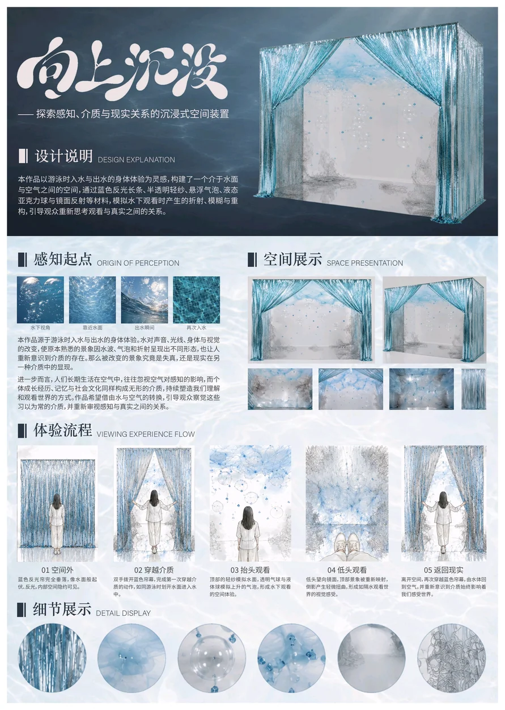

返回设计项目索引
返回设计项目索引D02 / 设计团队 · 实体展示
感官之间策展作品：向上沉没
我的作品以游泳出⽔与⼊⽔瞬间的⾝体感受为灵感，探索介质的变化如何塑造⼈的感知。当景象被 ⽔波、⽓泡和折射改变时，它究竟是被扭曲了，还是只是以另⼀种⽅式显现出来？我们平时所看⻅的 清晰世界，是否就等同于真实本⾝？
作品对这⼀问题的回答是，扭曲可能是现实在另⼀种介质中的重新显现。我们对世界的感受并不是 直接、稳定、不受条件影响的，⽽是在介质、⾝体和感官的共同作⽤中形成的。⽔会改变视觉、听觉 和⾝体感受，空⽓同样也在塑造⼈的观看与感受。只是因为⼈⻓期⽣活在空⽓之中，空⽓作为介质的 存在被我们忽略了。只有当⾝体经历⽔与空⽓的转换时，介质才会突然显形，⼈也会意识到⾃⼰⼀直通过某种环境条件观看、聆听和感受世界。因此，作品并不试图证明哪⼀种观看⽅式更接近真实，⽽
是希望打破单⼀真实的判断，让观众意识到现实本⾝在不同介质中具有多种被感知、被呈现、被理解的可能。
在此基础上，作品希望进⼀步将介质转换的体验引申到⼈的个⼈经历与看待世界的⽅式之中。每个⼈对世界的理解都并⾮完全客观，⽽会受到成⻓环境、⽣活经验、情绪状态、社会关系和既有观念的影响。这些因素也像⼀种看不⻅的介质，持续塑造我们判断现实、理解他⼈和认识⾃我的⽅式。只是因为它们存在得太久、太⾃然，我们往往会把它们误认为现实本⾝，⽽不再察觉它们对我们认知⽅式 的改变。只有当我们尝试穿越不同的介质，离开⾃⼰习以为常的位置，才有可能发现那些⻓期被视为正常的观看⽅式中隐藏的局限、偏差和扭曲。
